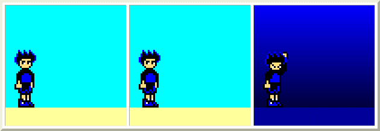

| . |
Watch these guys load:
Standard comic, one gif.

HTML-based comic.
Ta daa, the comic that was one big image took a second to load, while the comic made from HTML tables loaded almost instantly. Below is the source HTML for that comic, and the original images. See how there's three tiny images instead of one giant one?
Images used:  
That skinny gif is the moody background in the last panel, set as the background of the cell. <td width="200" height="170" background="midnight.gif"> The wallpapering effect gives the illusion of a much larger image without taking forever to load. Those two little pics of Radd are the same images used above, just artificially resized. Their "real" sizes, seen here, are 21 x 32. But by sizing them as 63 x 96 in HTML tags, they become larger without increasing load time. <img width="63" height="96" src="raddstare.gif"> They're still a measly 200 bytes no matter what size I blow them up to. Best of all, the "sky" and "ground" in the first couple of panels are just the background colors of cells; no graphics to load at all.
Code used:
<table border="4" cellspacing="4" cellpadding="0"><tr>
<td><table border="0" cellspacing="0" cellpadding="0"><tr>
<td width="200" height="170" bgcolor="00ffff" valign="bottom"><img width="63" height="96" src="raddstare.gif"></td></tr>
<td width="200" height="30" bgcolor="ffff99"></td></tr></table></td>
<td><table border="0" cellspacing="0" cellpadding="0"><tr>
<td width="200" height="170" bgcolor="00ffff" valign="bottom"><img width="63" height="96" src="raddstare.gif"></td></tr>
<td width="200" height="30" bgcolor="ffff99"></td></tr></table></td>
<td><table border="0" cellspacing="0" cellpadding="0"><tr>
<td width="200" height="170" background="midnight.gif" valign="bottom"><img width="63" height="96" src="raddsigh.gif"></td></tr>
<td width="200" height="30" bgcolor="000099"></td></tr></table></td>
</tr></table>
It may look daunting, but each of those three "panels" are repeated with just minor changes. If this stuff is Greek to you, check out the tutorials on tables at HTML Goodies.
At this point you might be saying, that's all fine, but who cares? I've got a T-1 line or whatever and either picture loads quickly for me. And I can make the first picture a lot more easily with Paint, while the second one takes more effort to write all that code. Why bother with it?
Three quick answers come to mind.
1. Memory limits. If you're using a "free" account like Angelfire or Geocities, you'll run out of RAM a lot quicker with a standard comic. It's hard to get far on a free account with any graphic intense webcomic.
2. Bandwidth limits. Most accounts, free or otherwise, limit the amount of bandwidth you can use per month. If your comic becomes popular, it's a lot harder to use up your bandwidth on a table-based comic. You can allow literally ten to a hundred times more traffic through your site, sometimes more.
3. Retaining viewers. Even if you yourself have a fast connection, it's common courtesy and common sense not to create pages that take forever for dial-up users to load. So many businesses fail to grasp this, and you see corporate websites like cartoonnetwork.com which take well over a minute per page to load. On average, for every ten seconds a page takes to load, one viewer gets bored and goes elsewhere. Untold millions are lost in advertising due to slow-loading websites.
That's the basic gist of why a more efficient webcomic is desirable. But there's one other reason that may grab your interest more than the others: Animation.
A lot of comics have done animations once or twice, perhaps for holiday or anniversary episodes. But it's usually not a regular event, because making an animated gif the size of a normal comic takes a buttload of memory, bandwidth and loading time.
But if your comic is done within tables, you don't have to turn the whole the whole comic into an animated gif just to animate a few parts of it. You can have several blown-up animated gif characters in a panel against a still background. Better yet, if you want repetitive scrolling or anime-ish speed lines, you can use a wallpapered animated background and still save memory.
Click here for another example!
| |
| | . | ... |